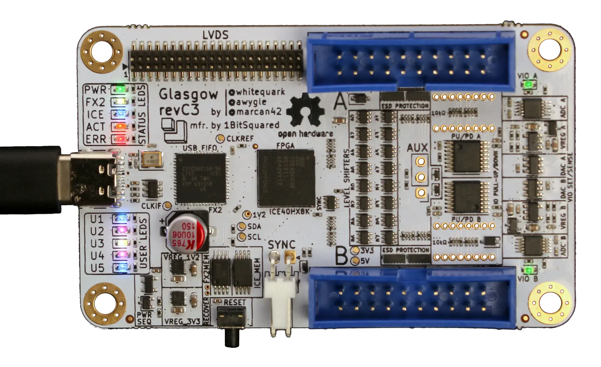
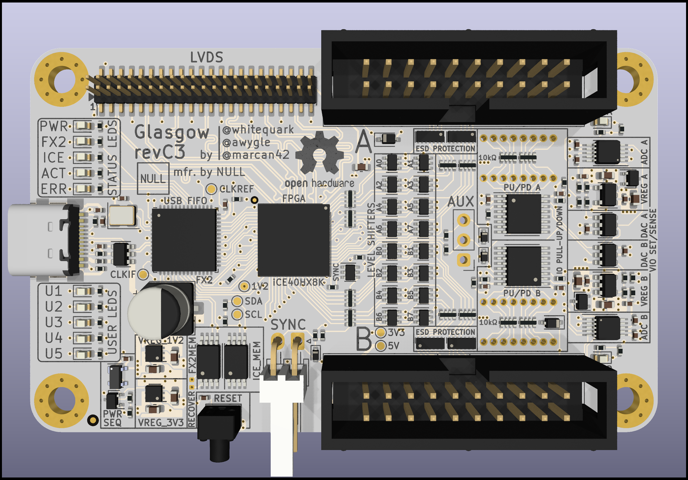
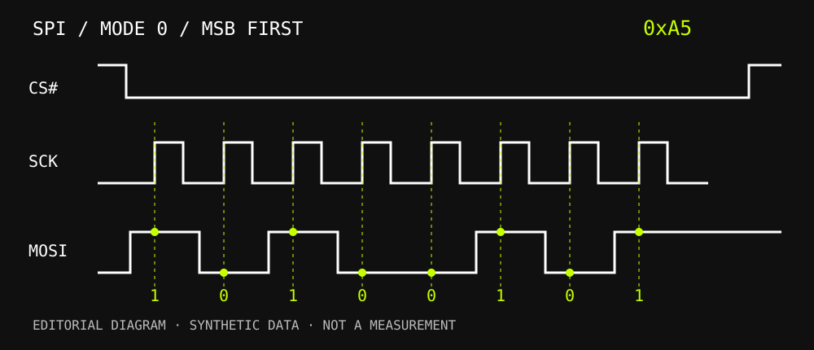
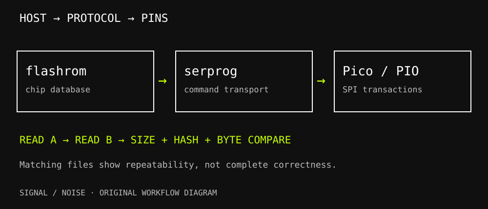
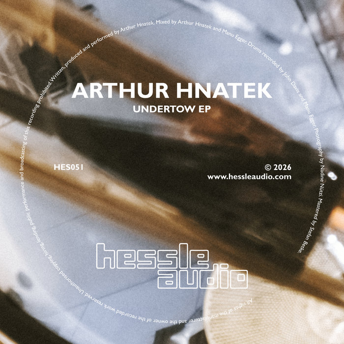
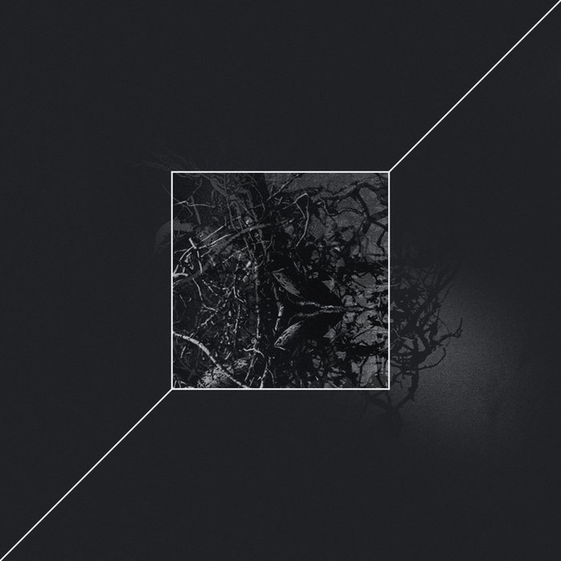
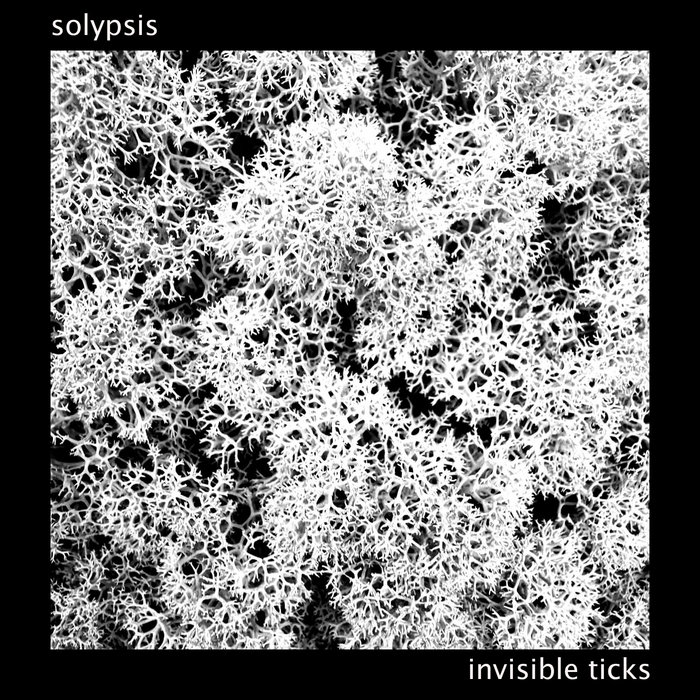

端口电压是接口的一部分
revC3 的 A、B 两个端口各有独立 VIO 电源，可分别设定逻辑电平；板内 3.3V 与端口电压不能混为一谈。看板图时，把稳压器、端口和测试点一起定位，比只找到 FPGA 型号更接近实际接线工作。

OPEN CIRCUIT · 午刊 001图：Glasgow Interface Explorer contributors · 官方裸板照片
2026.11.17 / TUE
HARDWARE · SOURCE · CULTURE
Glasgow 的接口分工
sigrok 如何给波形加上含义
Pico 读取 SPI Flash 的核对路径
这期看三种不同层次的工具：可重构的接口、解释采样的解码器，以及把闪存内容带回电脑的小固件。它们都能输出字节，但字节的可信度要沿着电压、引脚、时序和文件逐层核对。以下是开源项目选读与源码阅读，不是今日新品发布，也不是硬件实测报告。
一个硬件接口工具的价值，不只在于“支持多少协议”，也在于把哪些复杂性放进了硬件、哪些留给了使用者。
Glasgow 将不同任务封装为 applet：主机端使用 Python，FPGA 逻辑由 Amaranth 描述。读源码时可以沿着“主机请求—传输缓冲—引脚行为”分层查看，不必把 USB 通信和每一根时钟线揉在同一个函数里。官方介绍还明确提醒，旧的内建周期精确分析器已暂时移除；选工具时要读限制段落，不能把旧演示直接视为当前功能承诺。
项目介绍与当前限制 ↗核查：2026-11-17。

revC3 的 A、B 两个端口各有独立 VIO 电源，可分别设定逻辑电平；板内 3.3V 与端口电压不能混为一谈。看板图时，把稳压器、端口和测试点一起定位，比只找到 FPGA 型号更接近实际接线工作。
spi-controller 用于发起总线事务，spi-flashrom 则把接口桥接给 flashrom。两者不只是换一个上位机名字，默认的片选与输入脚位也有差别。脚本、接线表和所用 applet 应当成套记录。
| 信号 | spi-controller | spi-flashrom |
|---|---|---|
| CS | A0 | A5 |
| SCK | A1 | A1 |
| COPI / MOSI | A2 | A2 |
| CIPO / MISO | A3 | A4 |
这张表的用途不是让人照着盲接。先核对本机版本的帮助信息，再按目标器件的数据手册确认电压、供电和引脚方向；尤其不要把配置 I/O 电平当成已经正确给目标板供电。
逻辑分析仪记录电平随时间变化；协议解码器才把这些变化整理成位、字节和事务。两层可以出错，也应分开检查。
PulseView 是 sigrok 的图形界面；libsigrokdecode 中的解码器用 Python 编写，既能产生供界面显示的注释，也能把结构化输出交给上一层解码器。对于逆向工作，这意味着不必急着从零重写完整协议栈：先把底层 SPI 数据稳定解出，再研究器件如何把命令、地址和内容放进去。
PulseView 项目说明 ↗解码器 API 与输出类型 ↗

本次查看的 SPI 解码器先检查片选与时钟沿，再累计数据位。输出并不只有画面上的十六进制注释：还包括位的采样范围、数据和片选变化，并能在事务结束时输出整段传输。它保留了“数值”和“数值在什么时候出现”这两个维度。上层解释若与器件手册冲突，应先回到这些边界，而不是不断给乱码起新名字。
SPI 解码器源码：固定提交 ↗重点查看 options、find_clk_edge 与 putdata。源码版权：Gareth McMullin、Uwe Hermann 等项目贡献者；本文未复制整段实现。
Thomas Roth（stacksmashing）的 pico-serprog 把 Raspberry Pi Pico 变成可由 flashrom 使用的 SPI 读取/写入接口。仓库说明给出默认接线和读出命令；这是一项已有项目，本文核查的提交日期为 2023-10-17，不将它写成今天的新固件。

| 信号 | GPIO | Pico物理脚 |
|---|---|---|
| CS | GP1 | 2 |
| SCK | GP2 | 4 |
| MOSI | GP3 | 5 |
| MISO | GP4 | 6 |
表据项目 README 默认配置；信号线之外，还需按目标器件核对共地、供电及其他控制脚。
main.c 使用 PIO1 的状态机，通过命令处理逻辑发起 SPI 操作，初始化为 CPOL=0、CPHA=0。源码还用时钟分频计算可实现的频率。因此，终端命令里的设备传输参数与 SPI 线上的时钟频率，要分开看待，不能把一个数字当成整条链路的吞吐量。
识别目标芯片、电压与板上供电状态后，可先从项目提供的读取流程入手。下列命令展示两次独立读出的核对路径；设备名、速率与目标支持情况须按本机确认。这里没有展示擦除或写入操作，也没有声称完成过硬件读出。
# 路径与参数须按本机确认；只读示例
flashrom -p serprog:dev=/dev/ttyACM0:115200,spispeed=12M -r read-a.bin
flashrom -p serprog:dev=/dev/ttyACM0:115200,spispeed=12M -r read-b.bin
wc -c read-a.bin read-b.bin
sha256sum read-a.bin read-b.bin
cmp read-a.bin read-b.bin保存文件时把芯片完整标识、接线、电压、软件版本与命令日志放在一起。两份内容一致是“重复性”的证据，仍要结合容量、器件识别和数据结构检查；重复读到同一份全零或全一内容，并不能自动证明备份完整。编辑上更关心这份记录能否被下一个人复核，而不是一张只显示“成功”的终端截图。
三张十月发行的电子作品。发行日期见各条目。

2026-10-30 · Drums / Electronic
Arthur Hnatek
发行介绍将无预设的鼓组即兴作为原料，再以共振器、声码器和频谱处理重构；四首作品关注的是鼓录音怎样长出电子语言。

2026-10-16 · Dub / Glitch / Bass
FAX
Rubén A. Tamayo 首次在 Highpoint Lowlife 发行，五首作品以 dub 与故障电子为线索；母带由 Trash Panda QC 完成。

2026-10-21 · Industrial / IDM
Solypsis
十三首作品由 Component 发行。发行页未提供 About；Igloo 的 Pietro Da Sacco 将其置于破碎节奏、工业噪声与 IDM 的交界。
技术资料与发行页核查日期：2026-11-17。项目选读不等于新品报道；本期未进行硬件实验。